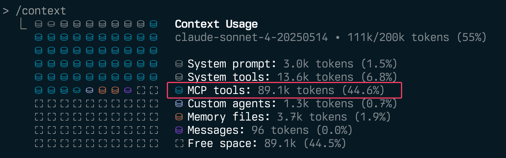
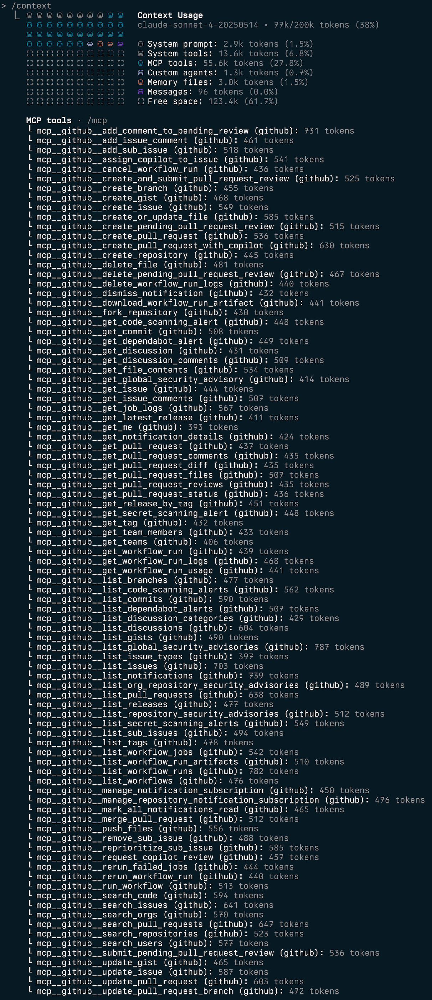

AI Engineering Principal at Mantel
Melbourne, Australia
AI engineer, open source contributor and music geek based in Melbourne, Australia. Around twenty years in tech across platform engineering and technical leadership, with the last five focused heavily on LLMs and AI.
This site is where I write about engineering, share things I've learned, and occasionally ramble about music or hi-fi.
I write and review a lot of Agent Skills, and find myself frequently pushing back in reviews, as many authors assume they're writing "just another markdown prompt" without considering that they're actually working with one component of an agentic system.
The TLDR of my feedback is usually along the lines of:
- The descriptions only job is to tell the agent when the skill should be triggered.
- Keep the description as terse as possible while still triggering.
- The SKILL.md should be lean with detail pushed to reference files.
- Put repeatable work in scripts rather than relying on model inference.
I recommend teams use or create their own version of my skill-creator-primer skill.
The primer works alongside the official Anthropic skill-creator skill and aims to catch common pitfalls and align with best practices.
Proactively use the primer
While the primer should activate passively when working with skills, to get the most out of it ask your agent to use it to review your work:"First please activate your skill creator primer skill. Then, I want you to look at my coworkers PR:
and conduct a critical review."
The descriptions only job is telling the agent when to load the skill. Summarising the contents invites the agent to act on the summary and skip the skill.
Example:
description: 'You MUST use this skill whenever the user mentions dashboards, monitoring or metrics.'
If your skill doesn't need to be triggered by an agent
Setdisable-model-invocation: truein the frontmatter so its description isn't loaded into every session
The main SKILL.md should inline only what every use of the skill needs, regardless of the situation.
Practising progressive disclosure keeps skills lean, reusable and composable.
Other bundled information such as handling for specific scenarios goes in references/<file>.md behind a pointer that says when to read it, e.g:
Example:
"Step 3: If working on frontend codebase you must first read 'references/frontend.md'"
If a step is often repeated, deterministic or requires a high degree of accuracy, bundle a small script.
uv run scripts/my-script.py <args>.Skills are for agents, not humans. Terse wins. The deletion test: cut a line and ask whether the agent's behaviour would change. If not, it stays cut.
The same can be true for having too many skills (without good reason to do so) - especially if the descriptions aren't tight, focused or well differentiated. Favour one skill with progressive disclosure (references for each scenario) over lots of smaller but related skills.
For workflows that must be followed within a skill:
Example:
Create and track a task / TODO for each step:
- Do x
- Do y
- Do z
Once all steps are completed conduct a critical review of the work and make any necessary corrections.
Agents drift and finish early on long procedures; a visible checklist stops that. The same is true if your skill instructs the agent to task sub-agents with their own workflows.
SKILL.md).AGENTS.md / CLAUDE.md in its root to help you and others maintain it.make lint, make test, make build, make run, etc.) makes it easy for agents and skills to do the right thing everywhere.permissionsMode: plan in its frontmatter.Quick tells that a skill wasn't reviewed carefully:
Treat third party skills as you would any other software or library obtained from the internet - don't blindly install them without first reviewing their content.
SKILL.md, references) and scripts, review the markdown for malicious or risky instructions that could mislead the agent.TLDR: If you're building MCP servers, let users disable individual tools. It's simple to implement and your context window will thank you.

Agents often don't need every tool a MCP server provides. Allowing individual tools to be disabled can not just vastly improve token usage, it aids with tool use reliability, the quality of the model's output and your security posture.
Want the AWS Terraform server but you don't use Terragrunt? Disable the Terragrunt tool (save 1.1k tokens). Want web search but not video and maps search? Disable the maps and video tools.
MCP servers add invaluable capabilities to LLMs and agents, however - unchecked the impact of their many tools quickly becomes apparent.
The numbers are worse than you think:
| MCP Server | Tool Name | Tokens |
|---|---|---|
| AWS Terraform | 6.4k (7 tools) | |
| ExecuteTerragruntCommand | 1.1k | |
| SearchAwsccProviderDocs | 1.1k | |
| SearchAwsProviderDocs | 905 | |
| SearchUserProvidedModule | 894 | |
| RunCheckovScan | 806 | |
| SearchSpecificAwsIaModules | 849 | |
| ExecuteTerraformCommand | 743 | |
| AWS Cost Explorer | 9.1k (7 tools) | |
| get_cost_and_usage | 2.2k | |
| get_cost_comparison_drivers | 1.9k | |
| get_cost_and_usage_comparisons | 1.5k | |
| get_cost_forecast | 1.4k | |
| get_dimension_values | 910 | |
| get_tag_values | 699 | |
| get_today_date | 469 | |
| Playwright | 9.7k (21 tools) | |
| browser_take_screenshot | 631 | |
| browser_fill_form | 593 | |
| browser_type | 545 | |
| browser_click | 516 | |
| browser_select_option | 501 | |
| ...plus 16 more tools | 390-469 | |
| Markdownify | pptx-to-markdown | 4.0k (10 tools) |
| 406 | ||
| bing-search-to-markdown | 405 | |
| audio-to-markdown | 404 | |
| docx-to-markdown | 403 | |
| image-to-markdown | 402 | |
| ...plus 5 more tools | 394-400 | |
| ShadCN UI | get_directory_structure | 3.0k (7 tools) |
| 478 | ||
| get_component_demo | 427 | |
| get_component | 422 | |
| get_component_metadata | 422 | |
| list_blocks | 405 | |
| ...plus 2 more tools | 376-467 |
That's over 32k tokens just for tool descriptions & annotations - before you've written a line of code.
Individual tools range from lightweight (387 tokens for basic memory operations) to massive (2.7k tokens for AWS's documentation generator). The AWS Cost Explorer's get_cost_and_usage tool alone burns 2.2k tokens describing parameters you might never use.
Fortunately, implementing selective tool disabling is straightforward and the benefits are immediate.
Start simple. The conditional registration approach requires minimal code and covers most use cases. If you need runtime flexibility later, you can always refactor to a registry pattern.
underscore_tool vs hyphen-tool)O(1) performance with map[string]bool over slice iterationToolName and toolname" tool1 , tool2 " should be equivalent to "tool1,tool2"DISABLED_TOOLS=",tool1,,tool2," should work"non-existent_tool" shouldn't break anythingI've implemented tool disabling in both my mcp-devtools server with a registry based approach,and recently raised a PR to AWS's MCP servers with a simpler conditional utility. Both work well and take slightly different approaches.
In my PR to AWS's MCP servers, I used straightforward conditional registration. Here's the pattern:
from awslabs.common.config import tool_enabled
if tool_enabled('ExecuteTerraformCommand'):
@mcp.tool(name='ExecuteTerraformCommand')
async def execute_terraform_command(...):
# existing implementation unchanged
The utility function parses a comma-separated environment variable:
def disabled_tools() -> Set[str]:
disabled_tools = os.environ.get('DISABLED_TOOLS', '')
if not disabled_tools:
return set()
return {tool.strip() for tool in disabled_tools.split(',') if tool.strip()}
def tool_enabled(tool_name: str) -> bool:
return tool_name not in disabled_tools()
Configuration is simple:
{
"env": {
"DISABLED_TOOLS": "ExecuteTerraformCommand,RunCheckovScan"
}
}
My MCP DevTools server uses a more sophisticated approach with runtime filtering:
// Tools register normally during init
func init() {
registry.Register(&ThinkTool{})
}
// But filtering happens at retrieval
func GetTool(name string) (tools.Tool, bool) {
if disabledFunctions[name] {
return nil, false
}
return toolRegistry[name], true
}
This approach allows for more complex filtering logic and better separation of concerns. The trade-off is slightly more implementation complexity.
Having a pattern for selective tool disabling is something I now add to all MCP servers that I develop and recommend to others. The implementation effort is minimal, but the user value - and performance improvement - is significant.
If you're maintaining an MCP server, add this feature. Your users are already thinking about their token budgets and context quality - help them optimise both.
GitHub's MCP server is a masterclass in context pollution.
Where other servers hover around 3-10k tokens, The GitHub MCP consumes a staggering 46k tokens across 91 different tools that cannot be individually enabled or disabled. GitHub alone consumes nearly a quarter of Claude Sonnet / Opus 4's context window - before you even write a single line of code.
For comparison - MCP-DevTools provides the most useful GitHub functionality in just 1.6k tokens with a single tool.
Github's MCP fails to:
list_issues, search_issues, update_issue could be a single issue_management tool).